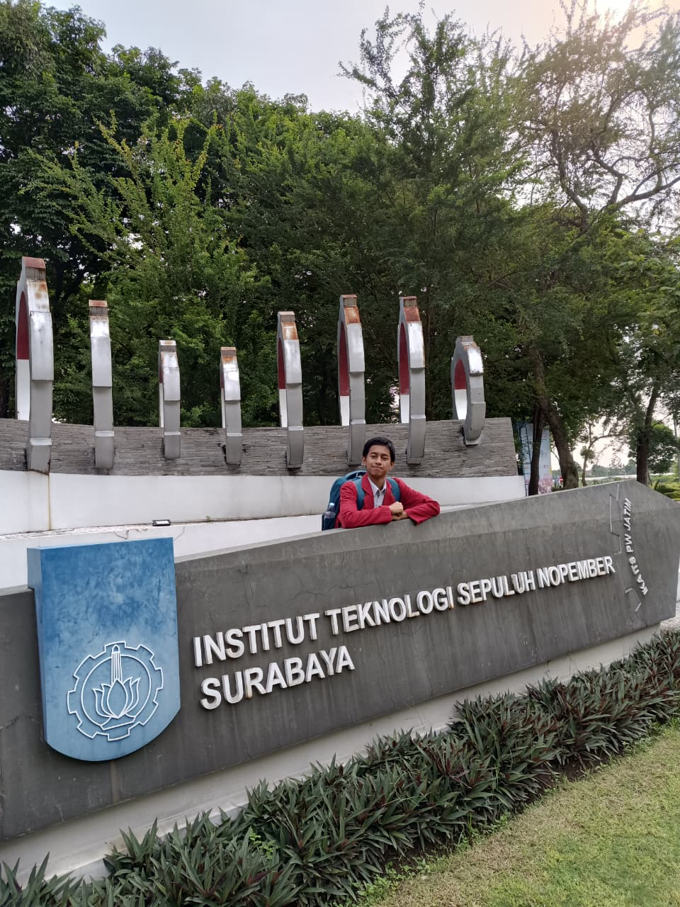
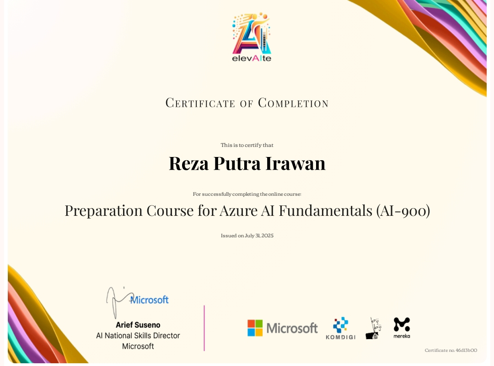
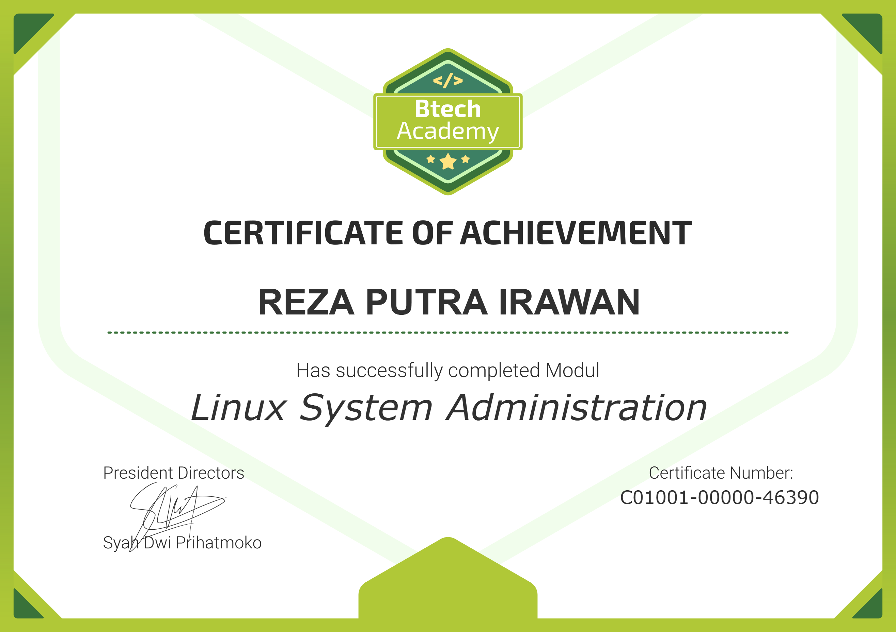

Hi I'm Reza Putra Irawan
Junior Network System Administrator Engineer. Siswa kelas XII jurusan TJAT SMK Telkom Sidoarjo dengan fokus kuat pada Network System Administration. Terlatih dalam routing dinamis (OSPF, BGP), keandalan jaringan (High Availability), dan manajemen server virtualisasi (Proxmox & Linux Debian).

.png)
Tentang Saya
Saya adalah siswa kelas XII jurusan Teknik Jaringan Akses Telekomunikasi (TJAT) di SMK Telkom Sidoarjo dengan fokus kuat pada Network System Administration.
Memiliki kemampuan praktis tingkat lanjut dalam konfigurasi routing dinamis (OSPF, BGP), perancangan sistem keandalan dan redundansi jaringan (High Availability), serta konfigurasi switching (Cisco & MikroTik). Selain itu, saya juga kompeten dalam administrasi server Linux (Debian), manajemen virtualisasi menggunakan Proxmox, serta konfigurasi layanan sistem seperti Mail Server, WordPress, serta MySQL. Terbiasa melakukan troubleshooting infrastruktur IT dan antusias untuk belajar mengimplementasikan keahlian teknis ini secara profesional untuk mendukung operasional perusahaan melalui Praktik Kerja Lapangan (PKL).
10+
Total Projects
8+
Sertifikasi
Profil Akademik & Perjalanan
Jejak pendidikan, pengalaman kepanitiaan, dan dedikasi di berbagai organisasi
Pendidikan
SMK Telkom Sidoarjo
2024 - SekarangJurusan Teknik Jaringan Akses Telekomunikasi (TJAT). Fokus pada Administrasi Infrastruktur Jaringan, Sistem Operasi Jaringan, dan Manajemen Server Virtualisasi.
SMP Negeri 1 Sukodono
2021 - 2024Menyelesaikan masa studi dengan pencapaian nilai yang baik, aktif berkolaborasi dan mengikuti kegiatan sekolah.
Pengalaman & Kepanitiaan
Koordinator PDD Pengembaraan Bantara
Januari 2026Memimpin dan mengkoordinasikan tim dokumentasi lapangan. Bertanggung jawab membagi alokasi tugas, merencanakan peliputan, serta memastikan seluruh momen krusial terekam dengan kualitas tinggi.
Mentor Utama & Pengajar - Skomda Mengajar
Januari 2026Memimpin sesi mengajar interaktif mengenai fundamental logika pemrograman menggunakan Game Maker, serta memberikan edukasi pengenalan dasar Artificial Intelligence (AI) di SMPN 1 Sukodono.
Tim PDD - Ramadhan Camp
Maret 2026Bertanggung jawab atas pengelolaan teknis dokumentasi dan publikasi visual selama rangkaian kegiatan perkemahan outdoor.
Tim PDD - Musyawarah Ambalan
Januari 2026Mengoperasikan perangkat keras fotografi profesional untuk mendokumentasikan jalannya sidang dan musyawarah kepramukaan.
Guest Observer - Pameran TA Instrumentasi ITS
November 2025Mengobservasi inovasi teknologi dan implementasi sistem instrumentasi karya mahasiswa ITS guna memperluas wawasan teknis.
Pengajar - Skomda Youth Collaboration
September 2025Menjadi mentor/pengajar sukarela di SMPN 2 Sukodono untuk membagikan wawasan dasar terkait dunia desain.
Petugas Protokoler Upacara
September 2025Bertugas sebagai pembawa teks Pancasila dalam upacara rutin, yang melatih tingkat kedisiplinan, ketelitian, dan tanggung jawab.
Tim Operator Live Streaming Upacara HUT RI
Agustus 2025Mengelola teknis penyiaran langsung (broadcasting) jalannya upacara, memastikan stabilitas perangkat lunak dan kelancaran streaming.
Tim PDD MPLS dan Leadership
Juni 2025Menjadi petugas dokumentasi pada kegiatan MPLS, memastikan semua tertangkap kamera baik foto maupun video menggunakan kamera mobile.
Tim PDD Classmeeting
September 2025Berperan aktif mendokumentasikan dinamika kompetisi antar siswa dan mengelola hasil visual acara.
Organisasi
Media Kreatif Skomda (Metif)
Nov 2024 - SekarangMerencanakan sesi pemotretan dan mengoperasikan peralatan fotografi untuk hasil berkualitas tinggi.
Komunitas Esport SMK Telkom
Pengurus (Apr 2025 - Sekarang)Menjadi panitia mengatur latihan, jadwal pertandingan, dan memastikan kelancaran operasional.
Dewan Ambalan Sasongko Lukitaningsih
Pengurus (Sep 2025 - Sekarang)Merencanakan dan mengelola kegiatan kepramukaan mulai dari latihan rutin hingga lomba.
Komisi Kedisplinan SMK Telkom
Pengurus (Okt 2025 - Sekarang)Mengawasi kedisiplinan siswa, penanganan pelanggaran, dan pembinaan perilaku positif.
Prestasi & Sertifikasi Kompetensi
Validasi keahlian industri dan pencapaian medali di kompetisi nasional.
Sertifikasi Kompetensi

Cyber Security Officer
Telkom DigiUp (Des 2025)
Azure AI Fundamentals (AI-900)
Elevate ID (Sep 2025)
Linux System Administration
Btech Adinusa (Feb 2026).png )
Cisco Dasar
ID-Networkers (Agt 2025).png)
MikroTik Dasar
ID-Networkers (Agt 2025)Jaringan Komputer Dasar
ID-Networkers (Agt 2025)
Belajar Linux dari Nol
ID-Networkers (Agt 2025)
Cyber Security Awareness
Telkom Schools (Juli 2024)Kejuaraan & Penghargaan
Medali Emas - OAN-KP 2025
Juara Olimpiade Akademik Nasional Kesaktian Pancasila bidang Informatika.
Medali Emas - Festival Olimpiade
Peringkat 4 Jawa Timur jenjang SMK yang diadakan University ID Education.
Medali Perak - Braindicator
Juara Olimpiade Kompetisi Siswa Nasional bidang Informatika.
Medali Perak - Sumpah Pemuda
Pusat Olimpiade Nasional bidang Informatika tingkat SMA/SMK.
Top 10 Nasional - ITC 8.0 Universitas Dian Nuswantoro
Finalis merancang UI/UX website responsif era digital.
Top 10 Nasional - Dinacom 11.0
Finalis merancang Platform SORTIQ pengelolaan limbah AI.
Juara Karya Berbakat Poster
Creativity Competition Hari Guru Nasional 2024.
Peserta Nasional NETCOMP 4.0
Kompetisi POC Networking Enterprise Cisco tingkat nasional.
Keahlian Aplikasi & Tools
Kompetensi teknis, kemampuan interpersonal, dan perangkat lunak
Hard Skills
Soft Skills
Ekosistem & Tools
 Linux Debian
Linux DebianFeatured Projects
Karya dan implementasi praktis dari CV saya
Mari Terhubung.
Sedang mencari Network System Administrator yang berdedikasi? Saya terbuka untuk diskusi dan peluang kolaborasi Praktik Kerja Lapangan (PKL). Kontak saya melalui detail di bawah.
Temukan saya di platform profesional: